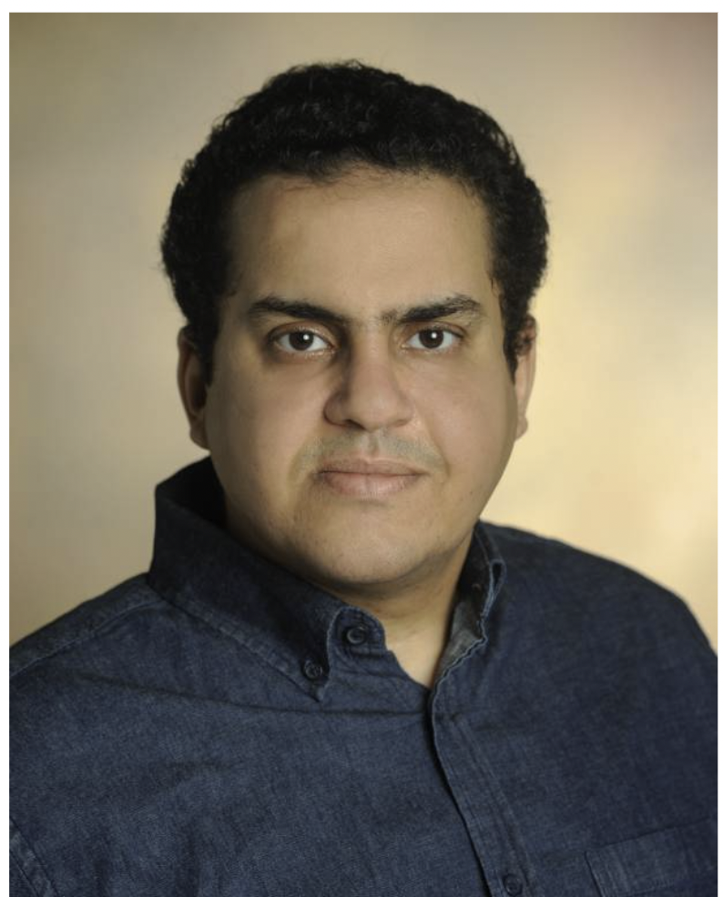

About SPEN Lab
The Security and Privacy of Emerging Networks (SPEN) Research Lab at the University of Southern Mississippi works on secure, privacy-preserving, and AI-powered systems for emerging networked environments.
- Cybersecurity
- Secure and privacy-preserving artificial intelligence
- Security and privacy preservation in autonomous vehicles and vehicular ad hoc networks
- Security and privacy of biometric identification
- Smart grid advanced metering infrastructure communication network security
- Location privacy-preserving schemes
- Security and privacy of e-health applications
- Artificial intelligence in cybersecurity
- Autonomous vehicular cloud computing security and privacy
The lab currently mentors more than 25 undergraduate researchers and 8 Ph.D. students working on AI and cybersecurity-related research problems.

Lead Academic Supervisor

Associate Professor, Tenured
University of Southern Mississippi (USM)
Dr. Ahmed B. T. Sherif is a tenured Associate Professor in the School of Computing Sciences and Computer Engineering, Arts and Sciences, at the University of Southern Mississippi.
Employment
- Associate Professor, School of Computing Sciences and Computer Engineering, University of Southern Mississippi (May 2024 - Present)
- Assistant Professor, School of Computing Sciences and Computer Engineering, University of Southern Mississippi (Aug. 2018 - May 2024)
- Temporary Faculty Member, Electrical and Computer Engineering Department, Tennessee State University (Aug. 2017 - July 2018)
- Research Assistant, Electrical and Computer Engineering, Tennessee Technological University (Aug. 2015 - Aug. 2017)
- Research Assistant, Computer Science Engineering, Egypt-Japan University of Science & Technology (Feb. 2012 - Feb. 2014)
- Teaching Assistant, Computer Engineering, Al-Azhar University (Sept. 2009 - Aug. 2015)
Education
- Ph.D. in Electrical and Computer Engineering, Tennessee Technological University, USA (2017). Thesis: Towards Privacy-Preserving Services for Autonomous Vehicles (AVs). GPA: 4/4.
- M.S. in Computer Science and Engineering, Egypt-Japan University of Science & Technology, Egypt (2014). Thesis: Detection of Black-hole Attack in Mobile Ad-Hoc Network (MANET). GPA: 3.54/4.
- B.S. in Computer Engineering, Al-Azhar University, Egypt (2007). Grade: Excellent with honors. GPA: 3.7/4.
Recognition
- Aubrey Keith Lucas and Ella Ginn Lucas Endowment for Faculty Excellence Award, USM (2022)
- University of Southern Mississippi 2021 Junior Faculty Outstanding Teaching Award
- Springer Best Paper Award, ICETIS 2022
Contact Information
Office: Chain Technology Center (TEC) 329,
Hattiesburg
Email:
Ahmed.Sherif@usm.edu
Phone: (601) 266-6146